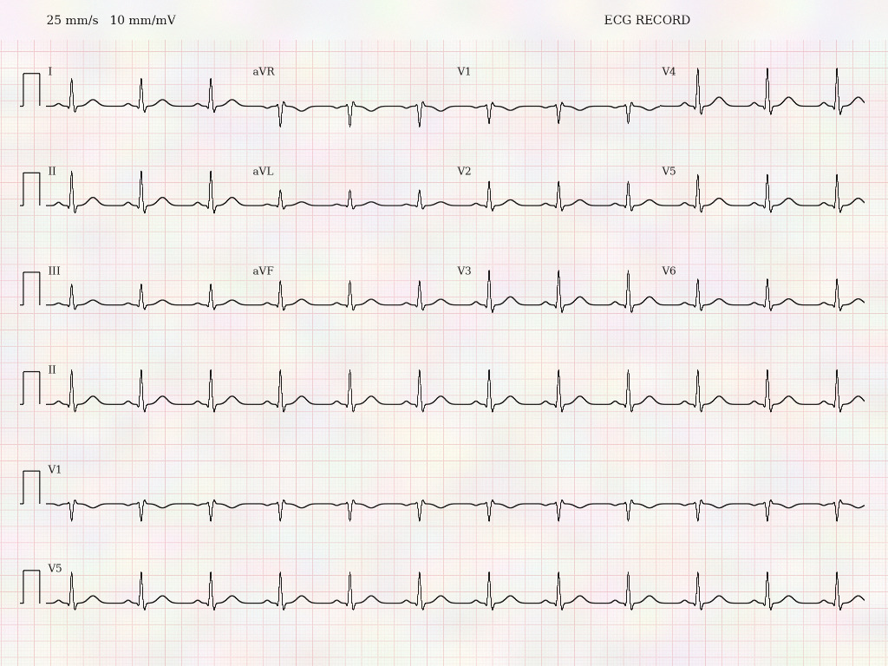
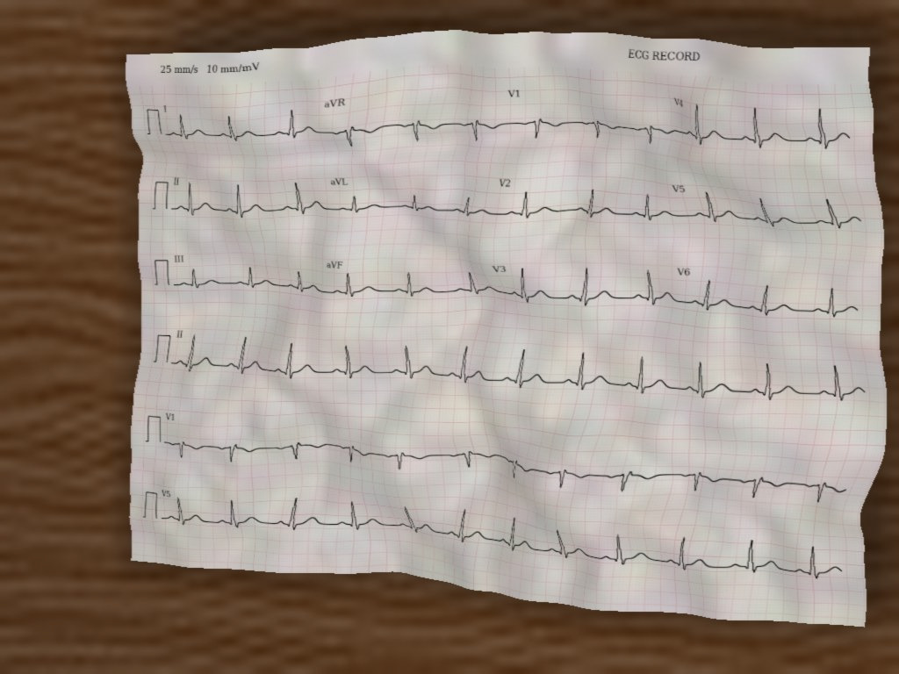

How rendering works
A waveform remains a waveform throughout rendering. The library changes how it is printed and photographed, and provides the mapping needed to supervise the resulting image.
Input contract#
| Quantity | Contract |
|---|---|
| Signals | Floating tensor [B,12,T], in mV |
| Lead order | I, II, III, aVR, aVL, aVF, V1, V2, V3, V4, V5, V6 |
| Sample rate | Positive scalar or [B] rates, in Hz |
| Padded lengths | Optional [B] valid source lengths, each ≥2 |
| RGB | Float32 [B,3,H,W], values in [0,1] |
| Device | Signals and module on the same device |
The default maximum printed duration is 10 seconds. Duration uses (length-1)/fs, then is capped by max_duration_s. Rendering does not create physiological variation or infer absent samples.
Signal to physical paper#
The page uses one pixels/mm scale for both axes. Paper speed turns time into horizontal distance. Gain turns mV into vertical distance. Calibration pulses share that scale. Changing resolution changes pixel density, while keeping the physical relationship consistent.
Trace coverage combines bounded subpixel line segments with an envelope of every valid source sample. The envelope helps preserve narrow extrema when many source samples fall into a single image column. It is a rasterization guarantee, not a guarantee that a blurred photograph is invertible.
Paper to observed image#
The canonical page combines texture, grid, traces, pulses and text. A sampling field maps each observed pixel back to paper coordinates. Perspective, lens distortion and the paper surface affect this field. The same field resamples the dense targets.


Image-space targets#
Targets describe geometric trace coverage in the observed image. Noise, JPEG artifacts, defocus and motion blur affect RGB. They do not corrupt the reference masks. Visibility removes explicitly hidden pixels when requested.
The source signal is retained as RenderBatch.reference. It contains the full input, including portions that may not be printed or visible. For waveform recovery, construct a loss over the appropriate observed time windows. Do not treat every source sample as recoverable from every layout.
Gradients#
Rendering runs under torch.no_grad(). Gradients train the image model. They do not flow from an image loss back to the source signal or to rendering parameters. This is a data transformation module, not an inverse solver.